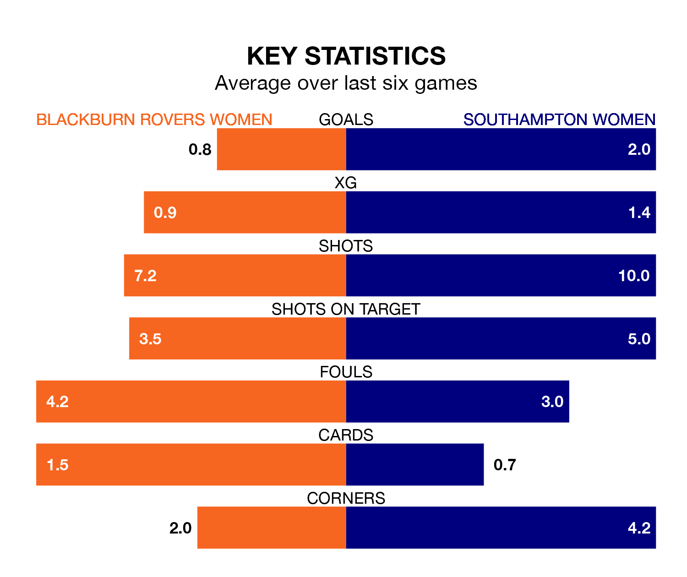

Southampton Women travel to Blackburn Rovers Women on early Sunday in the FA Women's Championship.
The visitors come into the game on the back of a win in their last match, having beaten Reading Women 5-0 at home, with two goals from Katie Wilkinson, two from Sophia Pharoah and one from Ella Morris.
Blackburn Rovers, meanwhile, drew their last match, 0-0 against Birmingham City Women.
With 33 goals in 18 games so far this season, Southampton are the league's second-highest scorers with 1.8 goals per game. And they are conceding fewer than average, letting in 19 goals at a rate of 1.1 per game.
Blackburn Rovers, meanwhile, are below average scorers, with 0.9 goals per game, compared to a league average of 1.3. They have conceded 1.5 goals per game.
In Pharoah and Wilkinson, the Saints have two of the league's most on-form strikers so far this season. They have notched eight goals each, to sit third in the scoring charts.
The hosts' top scorer, with three goals in 17 games, is Lucy Shepherd.
The away team are third in the table after 18 games, of which they have won 11 and lost seven, earning 33 points.
Blackburn Rovers are four places behind Southampton in seventh, with seven wins and two draws putting them on 23 points.
Blackburn Rovers are in mixed form in the FA Women's Championship, with two wins and two draws from their last six games.
With four wins and two losses over that period, Southampton's form is better – they have taken 12 points from 18, compared to the home side's eight.
In the last three years, Blackburn Rovers and Southampton have played each other on three occasions. Southampton won one of them and they drew the other.
Their last meeting was on September 3, when Southampton won 2-0 at home.
Updated: 10:19 (UTC), 22/03/24